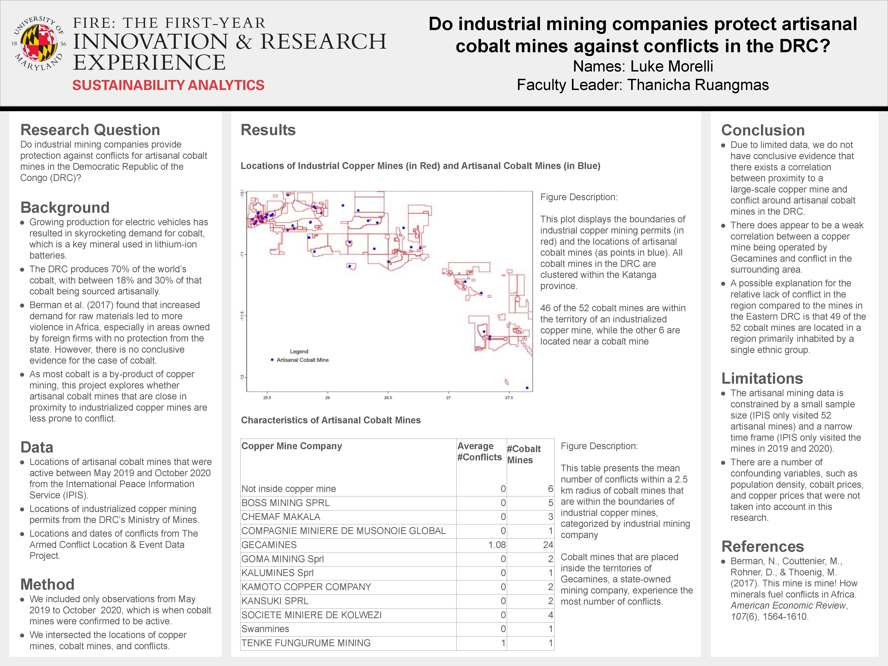
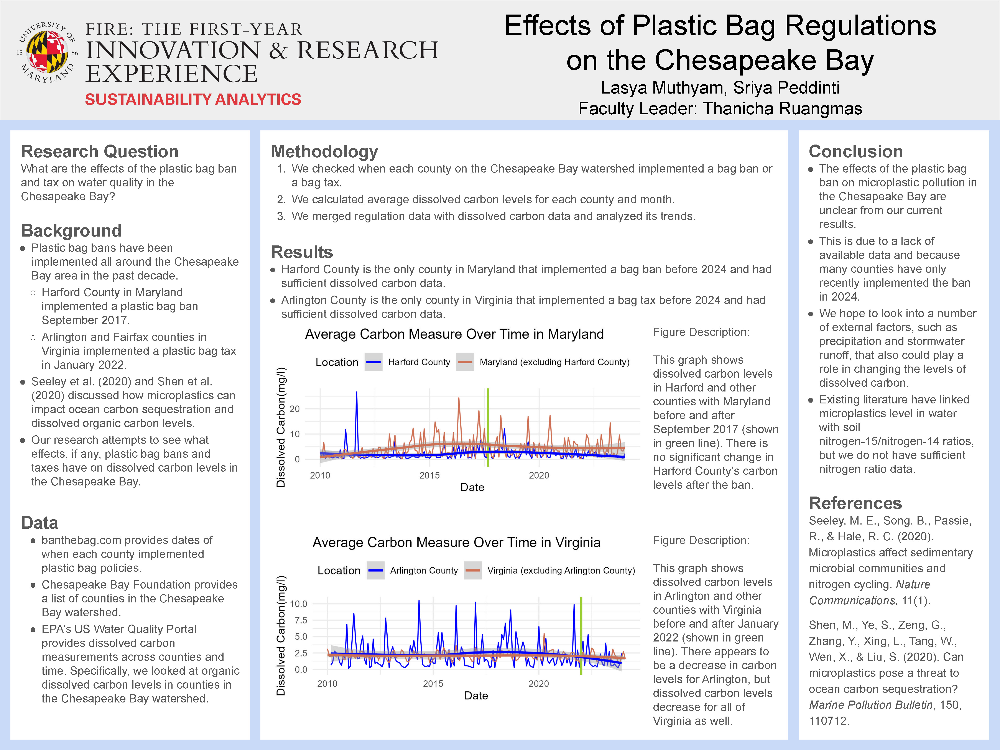
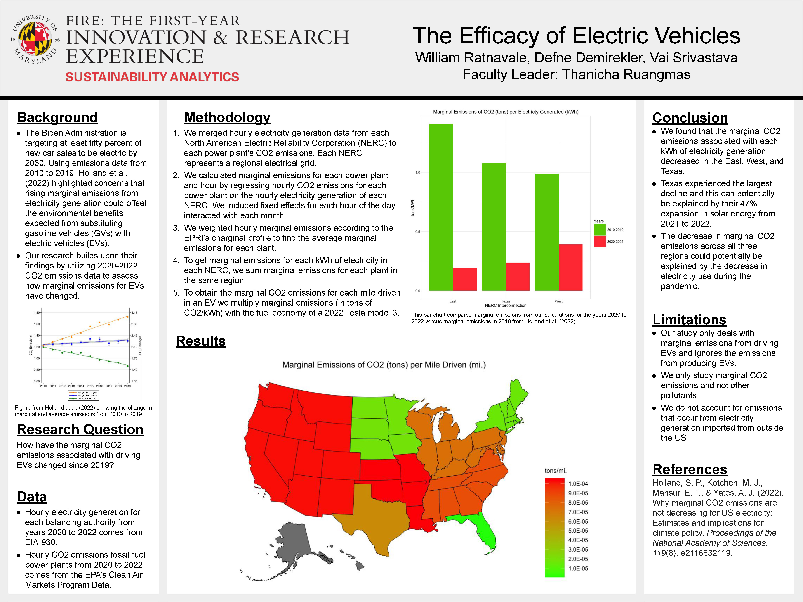

Year 2024
Summer Undergraduate Research Conference
For eight weeks, FIRE Sustainability Analytics interns studied the impact of light rail openings in four cities: Charlotte, NC, Phoenix-Mesa, AZ, Houston, TX, and Minneapolis-St. Paul, MN. They used the Discontinuity Based Ordinary Least Squares Model, similar to Chen & Whalley (2012), to study the impact of light rail openings on air quality. Afterward, they used demographic data to analyze the potential causes of public transit adoption. Their posters are displayed at UMD’s Summer Undergraduate Research Conference, and links to their GitHub-Flavored Markdown Page are shown below.
Charlotte, NC

Phoenix-Mesa, AZ

Houston, TX

Minneapolis-St. Paul, MN

Undergraduate Research Day
Peer Research Mentors working on their research projects for at least two semesters presented their posters at UMD’s Undergraduate Research Day. Their posters and links to their GitHub-Flavored Markdown Page are shown below.
Do industrial mining companies protect artisanal cobalt mines against conflicts in the DRC?

Effects of Plastic Bag Regulations on the Chesapeake Bay

Uncovering Greenwashing: A Review of Large Public Companies

The Efficacy of Electric Vehicles
